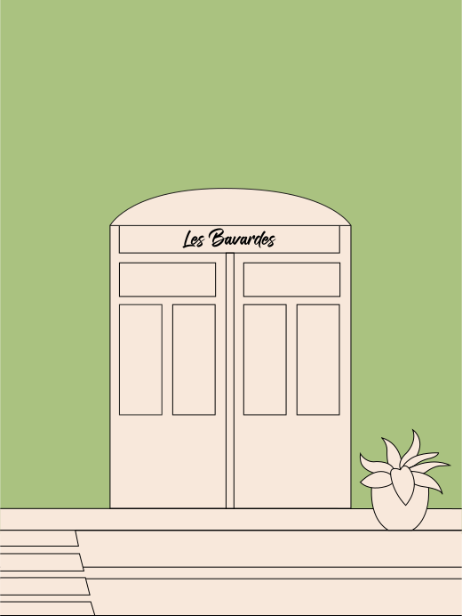
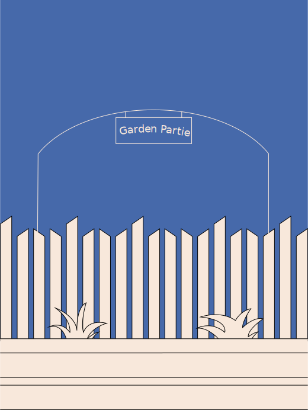
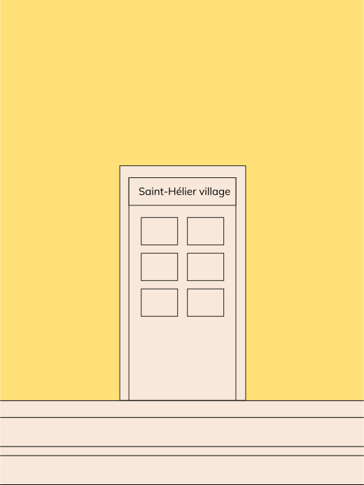

Bonjour, je suis Claude,
si tu veux en savoir plus sur la librairie La Commune
clique sur l’entrée


Bonjour, je suis Frédéric,
si tu veux en savoir plus sur les Moulins de Rennes
clique sur l’entrée


Bonjour, je suis Marlène,
si tu veux en savoir plus sur les Bavardes
clique sur l’entrée


Bonjour, je suis Marie,
si tu veux en savoir plus sur l'association Pari-Rennes
clique sur l’entrée
Bonjour, je suis Christophe,
si tu veux en savoir plus sur l'association Garden Partie
clique sur l’entrée

Bonjour, je suis Nicolas,
si tu veux en savoir plus sur l'association Saint-Héllier village
clique sur l’entrée

Bonjour, je suis Joachim,
si tu veux en savoir plus sur l'association Coeurs Résistants
clique sur l’entrée

Tu es arrivé au bout de la rue !
Si tu as aimé ces rencontres, tu peux découvrir les auteurs de ces histoires ci-dessous.